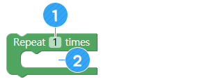

制作烹饪计时器机器人
• 了解一下计时器的原理。
• 可以使之在指定时间运行特定动作。
• 编制一个烹饪计时器程序并进行说明。
A. 烹饪计时器
烹饪食物时，我们使用一种称为“烹饪计时器”的设备来精确测量烹饪时间。

① 您可以将计时器运用于烹饪，也可以运用于学习。
② 计时器还可以用于预防事故。
③ 计时器可以精确地控制时间，所以非常方便
B. AsomeBot里面有时钟区块。
AsomeBot内设有一个非常精准的时钟，它以毫秒为单位测量时间。您可以用AsomeBot的计时功能制作烹饪计时器。

AsomeBot没有屏幕显示时间。那么，AsomeBot如何表述所测量的时间?

AsomeBot可以发出声音，也可以做出动作。因此，它可以通过如下方法表述时间。
除此之外，我们再思考一下还有没有其他显示方法。
A. Delay（延迟）（[ADVANCE（逻辑条件）]组）
在指定的时间内不作出动作并原地等待。利用此区块，就可以使AsomeBot根据您所指定的10秒、30秒、60秒等时间间隔进行动作。

① 以秒为单位输入单击后等待的时间。
B. Repaeat（重复）（[ADVANCE（逻辑条件）]组）
根据需要多次重复区块中的命令。
① 指定重复的次数。
② 添加重复的程序块。
利用 [ repeat（重复）]程序块和[Delay（延迟）]程序块，编制一个使AsomeBot每隔30秒拍脚一次的程序。
C. Dance Moves without Option（单个舞蹈动作）（[DANCE（舞蹈）]组）

AsomeBot用脚尖站着做Ballet（芭蕾舞）般的动作。

AsomeBot在原地踏步。

AsomeBot拍脚。

AsomeBot用脚执行Warigari。（做出双脚在地上来回蹭的动作）

AsomeBot抬起脚尖。是与[Ballet（芭蕾舞）]相反的动作。

AsomeBot走太空步。
D. Buzzer on（蜂鸣器打开）（[SOUND（声音）]组）
将蜂鸣器保持在激活的状态。运行此程序块，才能使用蜂鸣器。请注意，不运行此区块就不能使用蜂鸣器。

E. Buzzer off（蜂鸣器关闭）（[SOUND（声音）]组）
关闭蜂鸣器使用状态，允许使用其他部件。蜂鸣器为使用状态时，不能使用其他部件。播放声音后必须使用此区块，才能运行其他部件。

F. Play for（控制声音）（[SOUND（声音）]组）
利用此程序块，您就可以用频率发出想要的声音。

① 从列表中选择要播放的音阶。
② 从列表中选择要播放的音阶八度音。
③ 指定播放声音的时间。
设定在3-八度音Fa上播放0.5秒。
G. 节拍和时间
我们常用的乐谱每个节拍的播放时间如下。演奏音乐时，请充分反映各个节拍的演奏时间，制作演奏节目。
① 设定在3-八度音G上以八分音符节拍播放声音。
② 编制一个等待1分钟后用蜂鸣器播放音乐的程序。
A. 算法
您可以使用如下方法制作烹饪计时器。研究一下制作烹饪计时器的其他方法。
B. 制作您所需的烹饪计时器。